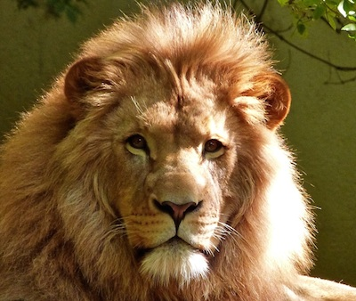

We don't have any registered mentors at this time.
Check back later and follow our Twitter bot for updates!
{% else %}
{% for mentor in mentorlist %}
{% endfor %}
{% endif %}

@{{ mentor.twitterhandle }}
Languages: {{ mentor.languages }}
Skills: {{ mentor.skills }}
Offering: {{ mentor.offers }}